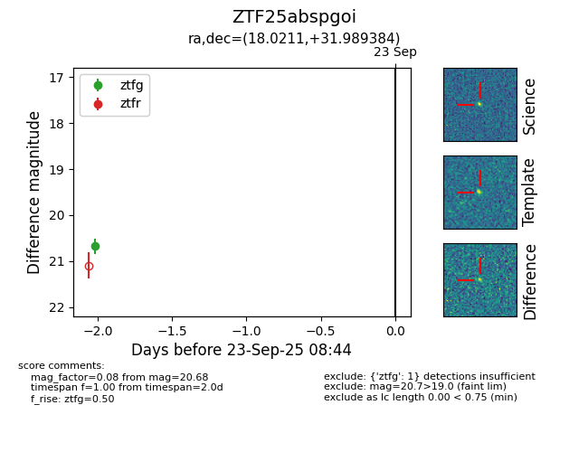

FINK: ZTF25abspgoi
Lasair: ZTF25abspgoi
ALeRCE: ZTF25abspgoi
ZTF25abspgoi (ztf,fink)
equatorial (ra, dec) = (18.0211,+31.98938)
galactic (l, b) = (128.0220,-30.67822)

last ztfg=20.68
1 ztfg detections